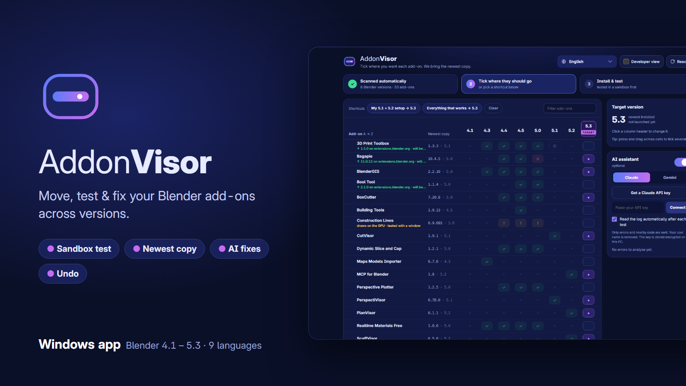
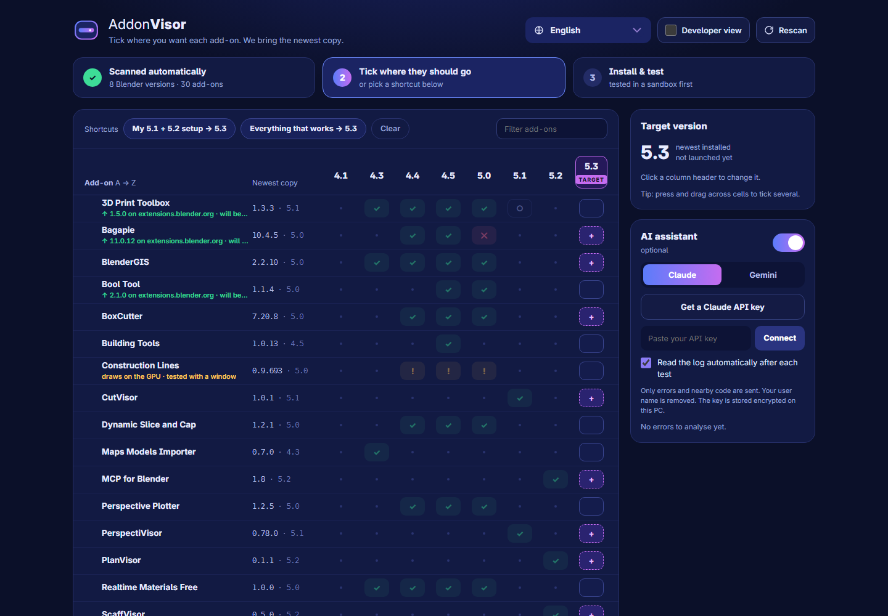
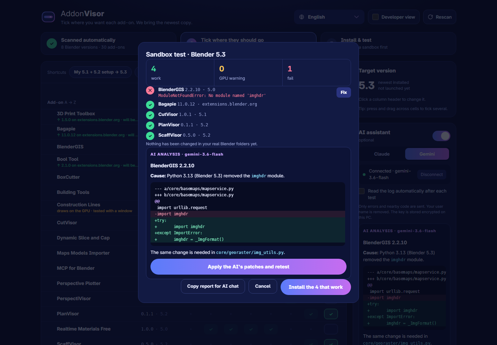
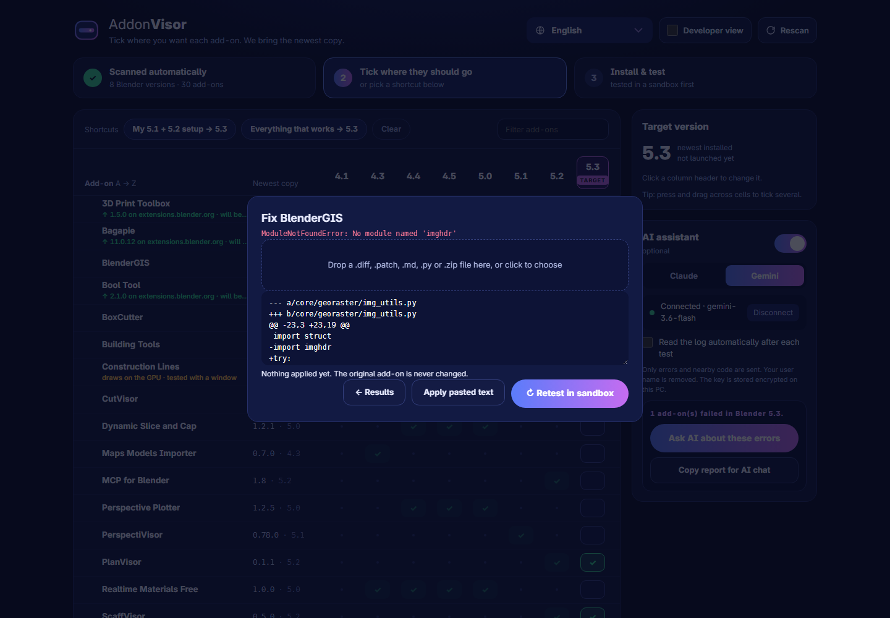

AddonVisor
Qué es
Sale un Blender nuevo, lo instalas… y tus add-ons no están. Los copias uno a uno, los activas y descubres cuáles se rompieron justo cuando los necesitas.
AddonVisor es una extensión de Blender que lo hace por ti. Instálala en tu Blender más reciente, pulsa Open AddonVisor y su página se abre en tu navegador web. Encuentra todos los Blender de tu ordenador (no solo aquel en el que estás), muestra qué add-ons usas en cada uno, los traslada a la versión que elijas, los prueba en un entorno aislado antes de cambiar nada y te dice exactamente qué se rompió y por qué, con una solución cuando la hay.
Cualquier IA puede arreglar lo que falla: AddonVisor escribe el prompt por ti. Cuando un add-on falla, pulsa Generar prompt de IA: obtienes una petición lista con el mensaje de error exacto, el código que falla, las versiones de Blender y Python y el formato de parche que AddonVisor entiende. Pégala en ChatGPT, Claude, Gemini, Copilot o cualquier otra IA, pega la respuesta en Reparar y AddonVisor la aplica a una copia y ejecuta Volver a probar en el entorno aislado.

Filosofía
Dentro de Blender, pero ve todos tus Blender
Un add-on normal solo ve el Blender en el que se ejecuta. AddonVisor inicia tus otras versiones de Blender en segundo plano para leerlas, así que puede compararlas todas a la vez, incluso las que nunca has abierto.
Primero probar, después cambiar
Nada se instala de verdad hasta que ha funcionado en una copia desechable de la configuración del destino. Tú decides qué instalar después de ver el resultado.
Nunca tocar los originales
De las versiones anteriores de Blender solo se lee. Las reparaciones se hacen en una copia. Cada instalación real tiene una copia de seguridad y se puede deshacer.
Pocos clics
Escanea por sí sola, elige el Blender más reciente como destino y la copia más reciente de cada add-on. La mayoría de las migraciones son dos clics: un atajo y luego Instalar y probar.
Para quién es
Instalación
Requisitos
- Blender 4.2 o posterior para ejecutar la extensión: instálala en tu Blender más reciente.
- Windows 10/11 o Linux (probados). macOS debería funcionar, pero aún no se ha probado en un Mac.
- Otras versiones de Blender en el mismo ordenador, como origen o destino. Probado con 4.1 – 5.3.
- Un navegador web (se usa el predeterminado).
- Internet solo para las descargas de extensions.blender.org y el asistente de IA opcional.
Instalar
- Descarga
addonvisor-1.0.0-extension.zip. - Arrástralo a la ventana de Blender, o usa Edit › Preferences › Get Extensions › ⌄ › Install from Disk… y elige el archivo.
- Comprueba que AddonVisor está marcado en Edit › Preferences › Add-ons.
Para quitarlo: Edit › Preferences › Add-ons › AddonVisor › Uninstall.
Abrir AddonVisor
- En la Vista 3D pulsa N y elige la pestaña AddonVisor (los mismos botones están en las preferencias de la extensión).
- Pulsa Open AddonVisor. Tu navegador web predeterminado abre la página de AddonVisor.
La página solo funciona en este ordenador: su dirección es 127.0.0.1 y el enlace lleva una clave privada, así que otros ordenadores y otras páginas web no pueden usarla. Mientras funciona, el panel muestra Running at 127.0.0.1:…, con Copy Link (para abrir la página en otro navegador) y Stop AddonVisor.
Cuando cierras Blender, o pulsas Stop AddonVisor, la página muestra AddonVisor se cerró. Vuelve a abrirlo desde Blender: cada vez se crea un enlace nuevo.
Blender sigue siendo utilizable mientras AddonVisor trabaja: los escaneos, las pruebas y las descargas se hacen en segundo plano.
Primer inicio
- Cuando se abre la página, AddonVisor escanea tu ordenador por sí solo: Program Files, Steam, el registro de Windows y las carpetas de Blender portátil (en Linux: carpetas de Blender en tu carpeta personal y /opt, Snap, Flatpak, Steam y el paquete de la distribución; en macOS:
/Applicationsy~/Applications). Cada Blender se inicia de forma invisible en segundo plano para leer sus add-ons; tarda unos segundos. - Ves la matriz. El Blender más reciente queda seleccionado como destino; cuando el destino es el Blender en el que estás, la tarjeta del destino lo indica.
- Cambia el idioma con el botón de la esquina superior derecha: English, Français, Español, Deutsch, Русский, 简体中文, 日本語, Português (Brasil), Română. El botón Ayuda abre esta guía.
Cómo leer la matriz
| Símbolo | Significado |
|---|---|
| ✓ | activado y funcionando en esa versión de Blender |
| ○ | instalado pero apagado |
| ✕ | activado pero no se carga: pasa el ratón por encima para ver el error |
| ! | add-on GPU: no se puede cargar en segundo plano, se vuelve a probar con una ventana pequeña |
| + | en cola: se instalará en la versión de destino |
La columna Copia más reciente muestra la versión más reciente del add-on encontrada en tu PC y de qué Blender procede. Las notas bajo el nombre te avisan cuando hay una versión más reciente en extensions.blender.org, cuando se sabe que una versión falla o cuando tienes una copia parcheada.
1 · Elige el destino
Haz clic en el encabezado de una columna para que ese Blender sea el destino. Por defecto es el más reciente instalado, aunque nunca lo hayas abierto.
Add-ons para el Blender en el que estás
El caso más habitual: trabajas en Blender 5.3 y quieres ahí tus add-ons de versiones anteriores. Cuando el destino es el Blender en el que estás, la tarjeta Versión de destino dice el Blender en el que estás: los add-ons se activan en esta sesión.
- Pulsa Instalar y probar. Cada add-on se prueba primero en un Blender aparte, en segundo plano, con una copia de tu configuración.
- Pulsa Instalar los N que funcionan. AddonVisor los prueba una vez más, copia a tu Blender solo los que pasan, los activa en esta sesión y deja que Blender guarde sus propias preferencias. Están listos para usar al momento, sin reiniciar.
- Un add-on que falló la prueba nunca se activa.
Deshacer los desactiva en la misma sesión, devuelve los archivos a su sitio y deja que Blender vuelva a guardar sus preferencias.
Por qué así: un Blender abierto escribe sus preferencias al salir, encima de cualquier cambio hecho desde fuera. Por eso, en el Blender en el que estás, AddonVisor nunca edita él mismo el archivo de preferencias: le pide a Blender que lo haga.
Otras versiones de Blender
Cualquier otro Blender del ordenador también puede ser el destino, incluso versiones anteriores a 4.2. AddonVisor instala en él desde fuera, como se describe en Instalar y probar. Ese Blender debe estar cerrado: si está abierto, la tarjeta del destino muestra abierto ahora: ciérralo antes de instalar, porque al salir guardaría sus propias preferencias encima de las que escribió AddonVisor.
2 · Marca los add-ons
- Haz clic en una celda vacía de la columna de destino para poner ese add-on en cola; vuelve a hacer clic para quitarlo.
- Haz clic y arrastra por la columna para marcar varios a la vez.
- O usa un atajo: Mi configuración 5.1 + 5.2 → 5.3 (todo lo activado en tus dos versiones más recientes), Todo lo que funciona → 5.3 o Limpiar.
- Los add-ons que instalaste pero nunca activaste están ocultos bajo Mostrar N add-ons nunca activados.
Qué copia se usa
Nunca eliges una versión de origen. Para cada add-on, AddonVisor revisa todas las copias de tu PC y usa, en este orden:
- tu copia parcheada, si reparaste el add-on (ver Reparar en una copia);
- una versión compatible más reciente de extensions.blender.org, cuando existe o cuando se sabe que tu copia local falla. La fila dice “↑ 11.0.12 en extensions.blender.org · se usará esta” y Blender la descarga por sí mismo;
- si no, la copia local más reciente que declara compatibilidad con el destino (
blender_version_min/maxobl_info["blender"]).
3 · Instalar y probar
Pulsa Instalar y probar (N).
- Prueba aislada. La carpeta de usuario del destino se copia a una carpeta temporal y Blender se inicia apuntando a esa copia. Los add-ons se copian y se activan uno a uno. No cambia nada en tus carpetas reales de Blender. Los add-ons GPU se vuelven a probar con una ventana pequeña; puede que la veas aparecer un instante.
- Resultados. Ves qué funciona y qué falla, con el error real de Python. Luego eliges Instalar los N que funcionan, Reparar junto a un add-on que falla, o Cancelar.

imghdr), Bagapie viene de extensions.blender.org. Con el asistente de IA activado, su análisis aparece justo debajo.Deshacer y copias de seguridad
Antes de una instalación real, AddonVisor guarda tus preferencias y cada archivo que reemplaza.
- En la ventana de resultados: ↶ Deshacer.
- Más tarde: ↶ Deshacer la última instalación en la tarjeta Versión de destino.
Deshacer elimina lo que se añadió, vuelve a poner lo que se reemplazó y restaura tus preferencias (o las elimina, si ese Blender no tenía antes).
Reparar en una copia
Cuando un add-on falla, pulsa Reparar a su lado. AddonVisor crea una copia parcheada y aplica tu corrección en ella: el original nunca se edita.
| Lo que le das | Qué ocurre |
|---|---|
Un diff (.diff, .patch) | Se localiza por el código que lo rodea; los números de línea se ignoran, así que funcionan los diffs escritos por una IA |
Una respuesta completa de un chat de IA (.md o texto pegado) | Se aplica cada bloque ```diff que contenga |
Un archivo .py completo | Reemplaza el archivo con el mismo nombre dentro del add-on |
Un .zip del add-on reparado | Reemplaza la copia entera |
Suelta un archivo en el recuadro, haz clic en él para elegir uno, o pega texto y pulsa Aplicar el texto pegado. Funcionan los parches de cualquier IA: Claude, ChatGPT, Gemini, Copilot. Después pulsa ↻ Volver a probar en el entorno aislado. Si el asistente integrado respondió con un diff, Aplicar los parches de la IA y volver a probar lo hace con un solo clic.

¿De dónde salen los parches?
No tienes que escribir código. Tres formas, de la más fácil:
- El asistente integrado (Claude, Gemini o una IA local — ver Asistente de IA). Tras una prueba fallida lee el registro solo; si su respuesta trae un diff, Aplicar los parches de la IA y volver a probar lo aplica y vuelve a probar con un clic.
- Cualquier chat de IA, con Generar prompt de IA. El botón está en la ventana de resultados y en el panel de IA, y funciona aunque el asistente esté apagado. Redacta una petición detallada en inglés: las versiones de Blender y Python de ambos lados, tu sistema, el tipo de add-on y sus archivos, el error completo y el código que falla — y reglas exactas del formato del parche, para que la respuesta se aplique sola. Elige cómo pedirlo: Arreglo mínimo, Viejo + nuevo, Solo explicar (sin código, solo la causa y tus opciones), Revisión completa (todo lo que va a fallar, no solo el primer error) o Solo diff (IA local). Puedes editar el texto; luego pulsa Copiar prompt, pégalo en ChatGPT, Claude, Gemini, Copilot u otra IA, copia toda su respuesta y pégala en Reparar → Aplicar el texto pegado → Volver a probar en el entorno aislado.
- Tu propia petición. Copiar informe para la IA copia solo el informe breve del error; añade tu pregunta.
Reglas de seguridad
- Todo o nada. Si una parte de un parche no coincide, no se escribe nada y se te indica qué archivo y qué línea.
- Sin parches dobles. Un parche que ya está aplicado se rechaza.
- La sangría importa. En Python cambia el significado, así que debe coincidir (se toleran tabulaciones frente a 4 espacios).
…/extensions/.user/user_default/addonvisor/logs/.La lista de parches
Las filas con parches muestran ▸. Haz clic para ver cada parche: número, nombre de archivo, qué archivos cambió y cuándo.
- ✕ Quitar deshace un parche: la copia se reconstruye a partir del original y los demás parches se vuelven a aplicar, en orden. Si un parche posterior depende de él, no cambia nada y se te indica cuál quitar primero.
- ↺ Restablecer parches (o el pequeño ↺ junto a la nota) elimina la copia parcheada; se vuelve a usar el original.

Ejemplo: BlenderGIS en Blender 5.3
Blender 5.3 incluye Python 3.13, que eliminó el módulo imghdr. BlenderGIS 2.2.10 lo usa en dos archivos y falla con ModuleNotFoundError: No module named 'imghdr'. Este parche sigue usando imghdr donde existe y, si no, recurre a una pequeña comprobación de la cabecera:
--- a/core/georaster/img_utils.py +++ b/core/georaster/img_utils.py @@ -23,3 +23,19 @@ import struct -import imghdr +try: + import imghdr +except ImportError: # removed in Python 3.13 (Blender 5.3+) + class imghdr: + @staticmethod + def what(_file, h): ...
Descarga el parche completo: BlenderGIS_2.2.10_python313_imghdr.diff y luego Reparar → suelta el archivo → Volver a probar.
Conectar y usar
Opcional. Tras una prueba fallida, lee el informe de errores y explica qué se rompió y cómo repararlo, normalmente con un diff listo. Sin él, AddonVisor funciona por completo y nada sale de tu equipo.
Gemini: clave gratuita con tu cuenta de Google
- Pulsa Continuar con Google; Google AI Studio se abre en tu navegador.
- Inicia sesión, pulsa Create API key y cópiala.
- Pégala en AddonVisor y pulsa Conectar.
Claude: clave de API de pago
- Pulsa Obtener una clave de API de Claude; se abre la Claude Console.
- Añade saldo en Billing y crea una clave en API keys (solo se muestra una vez).
- Pégala y pulsa Conectar. Una suscripción Claude Pro/Max no incluye el uso de la API; un análisis cuesta unos céntimos.
IA local: en tu PC y gratis
- Instala Ollama (o LM Studio, llama.cpp, Jan) y descarga un modelo, por ejemplo
ollama pull gemma4:e4b. - En AddonVisor elige Local, deja la dirección
http://localhost:11434/v1(LM Studio:http://localhost:1234/v1) y pulsa Buscar modelos. - Elige un modelo y pulsa Conectar.
Nada sale de tu ordenador. Los modelos pequeños son rápidos pero dan arreglos más flojos: vuelve a probar siempre en el entorno aislado; los modelos grandes (o Claude / Gemini) son más fiables. También sirve cualquier servidor compatible con OpenAI, incluidos los online que piden clave de API.
Uso
- Leer el registro automáticamente tras cada prueba (activado por defecto): la respuesta aparece en la ventana de resultados.
- O pulsa Preguntar a la IA.
- Si un modelo está ocupado, AddonVisor espera y prueba otro por sí solo; si aun así falla, pulsa ↻ Reintentar.
Qué se envía a la IA
Solo el informe de los add-ons que fallaron: el error de Python y unas 17 líneas de código alrededor de la línea que falla. Las rutas que contienen tu nombre de usuario se sustituyen por %USERPROFILE% (Linux, macOS: ~). Las claves se guardan en la carpeta de la extensión: en Windows, cifradas para tu usuario de Windows (DPAPI); en Linux y macOS, en un archivo que solo tu usuario puede leer. Desconectar las elimina. Modelos: Claude claude-opus-5-5; Gemini, el modelo Flash más reciente que tu clave pueda usar. Con Local, el informe solo va al servidor de IA de tu ordenador.
Archivos y carpetas
Todo está en la carpeta propia de la extensión, dentro de la carpeta de usuario del Blender que la ejecuta; para Blender 5.3 en Windows: %APPDATA%\Blender Foundation\Blender\5.3\extensions\.user\user_default\addonvisor\ (Linux: ~/.config/blender/5.3/extensions/.user/user_default/addonvisor/; macOS: ~/Library/Application Support/Blender/5.3/extensions/.user/user_default/addonvisor/).
| Carpeta / archivo | Contenido |
|---|---|
backups | copia de seguridad antes de cada instalación real (la usa Deshacer) |
logs | run_*.log y ai_report_*.md de cada prueba |
patched | tus copias reparadas de add-ons, con cada parche que aplicaste |
settings.json | idioma, opciones de IA, carpetas extra de Blender |
keys.json | claves de IA: cifradas para tu usuario de Windows; en Linux y macOS solo las puede leer tu usuario |
Las pruebas aisladas usan una carpeta temporal (en Windows %TEMP%\AddonVisor-ext\); los entornos aislados de más de un día se borran solos.
Privacidad
- La página solo funciona en tu ordenador (
127.0.0.1, enlace privado que cambia cada vez). - Sin cuenta, sin telemetría, sin analíticas.
- Red solo para extensions.blender.org (qué extensiones existen y descargas a través de Blender) y el proveedor de IA que conectaste.
- Todo lo demás se queda en tu ordenador.
- Con una IA local (Ollama, LM Studio…), el informe nunca sale de tu ordenador.
Solución de problemas
| Problema | Qué hacer |
|---|---|
| La página no se abre | En el panel pulsa Copy Link y pega el enlace en tu navegador. Si sigue sin abrirse: Stop AddonVisor y luego otra vez Open AddonVisor. |
| “AddonVisor se cerró” | Blender se cerró o AddonVisor se detuvo. Vuelve a abrirlo desde Blender (N › AddonVisor › Open AddonVisor); los enlaces antiguos dejan de funcionar. |
| “Blender did not answer … is a dialog open?” | Blender está ocupado (un diálogo abierto, un render o un bake largo). Cierra el diálogo o espera, y vuelve a intentarlo. |
| “abierto ahora: ciérralo antes de instalar” | El destino es otro Blender que está abierto. Ciérralo y luego instala. |
| Falta una versión de Blender | Añade su carpeta a settings.json en la carpeta de la extensión: {"extra_dirs": ["D:\\Apps\\blender-5.3"]} y luego pulsa Volver a escanear. Las instalaciones de Microsoft Store no son compatibles. |
| Aparece un instante una ventana de Blender durante la prueba | Es normal: los add-ons GPU se vuelven a probar con una ventana. Se cierra sola. |
| “No se pudo contactar con la IA: … high demand” | El proveedor está saturado; ya se probaron otros modelos. Pulsa ↻ Reintentar más tarde. |
| “hunk N does not match the file” | El parche se escribió para otro código (otra versión, o la copia ya está parcheada). Abre ▸, quita o restablece los parches y vuelve a intentarlo. |
| “this patch is already applied” | No hay nada que hacer: el cambio ya está en la copia. |
| “could not delete … a file is in use” | Cierra las ventanas de archivos o los editores que muestren archivos de la carpeta patched y vuelve a intentarlo. |
| macOS: algo no funciona | macOS aún no se ha probado en un Mac. Envíanos el registro (ver más abajo). |
Para informar de un problema, adjunta el run_*.log más reciente de la carpeta logs, dentro de la carpeta de la extensión (consulta Archivos y carpetas), e indica tus versiones de Blender: GitHub issues o gmcis.cutvisor@gmail.com.
Preguntas frecuentes
¿Es un add-on de Blender?
Sí: una extensión de Blender (Blender 4.2+). Su página se abre en tu navegador web y lee todos los Blender de tu ordenador, no solo aquel en el que estás. También hay una aplicación de escritorio independiente para Windows y Linux: guía de la aplicación de escritorio.
¿Puede estropear mi configuración de Blender?
Todo se prueba antes en un entorno aislado; las instalaciones reales necesitan tu confirmación, hacen una copia de seguridad y se pueden deshacer.
¿Repara los add-ons automáticamente?
Usa una versión compatible más reciente de extensions.blender.org cuando la hay; si no, aplicas un parche (de la IA integrada o de cualquier otra) a una copia y vuelves a probar. Algunos add-ons necesitan a su autor.
¿Funciona con add-ons que he comprado?
Sí: copia lo que está instalado en tu PC y nunca comparte tus add-ons.
¿Windows, Linux, macOS?
Probado en Windows y Linux. macOS debería funcionar, pero aún no se ha probado en un Mac.
¿Puedo instalar también en versiones anteriores de Blender?
Sí. Cualquier Blender de tu ordenador puede ser el destino, incluso versiones anteriores a 4.2; solo tienen que estar cerradas mientras AddonVisor instala.
¿Se incluye el código fuente?
Sí. AddonVisor tiene licencia GNU GPL v3; la extensión es Python puro, así que la descarga es el código fuente.
Consigue AddonVisor
10 $, un solo pago, actualizaciones gratuitas para todas las versiones 1.x. Recibes addonvisor-1.0.0-extension.zip, que también es el código fuente completo (GNU GPL v3).
¿Prefieres una aplicación independiente que funcione fuera de Blender? Consulta la guía de la aplicación de escritorio (Windows, Linux).
Historial de cambios
1.0.0 — primera versión de la extensión de Blender
- Se instala en Blender 4.2 o posterior; Open AddonVisor abre su página en tu navegador web (solo en tu ordenador).
- Instala directamente en el Blender en el que estás: primero se prueba en un Blender aparte y luego se activa en tu sesión; deshacer funciona igual.
- Escanea cada Blender de tu ordenador y muestra todos tus add-ons en una sola matriz (A → Z).
- Siempre la copia más reciente de cada add-on; las versiones compatibles más nuevas se descargan de extensions.blender.org.
- Prueba en un entorno aislado antes de cambiar nada; instalas solo lo que funciona, con copia de seguridad y deshacer.
- Avisa cuando un Blender de destino está abierto.
- Reparación sobre una copia con parches de cualquier IA; lista de parches que se pueden quitar uno a uno.
- Generar prompt de IA: una petición detallada en inglés para cualquier IA (versiones, sistema, error, código que falla, formato del parche), con cinco formas de pedir.
- Asistente de IA opcional: Gemini, Claude o una IA local (Ollama, LM Studio o cualquier servidor compatible con OpenAI).
- 9 idiomas, ayuda en línea.